Developer tools
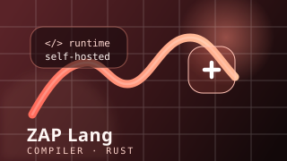
01Active
ZAP Lang
A fast, expressive programming language and developer tool with a Rust runtime, dynamic typing and a self-hosting compiler toolchain.
RustCompilerCLITypeScript
Hi, I am Arkar
FULL-STACK & AI PRODUCT ENGINEER
02 / About
I’m Arkar Yan — a product engineer based in Yangon, Myanmar. I build practical web and mobile products, AI features, and developer tools with a focus on useful, dependable software.
Let’s make something useful ↗03 / Selected work
A selection of products, tools and experiments built across different platforms and problems.

A fast, expressive programming language and developer tool with a Rust runtime, dynamic typing and a self-hosting compiler toolchain.
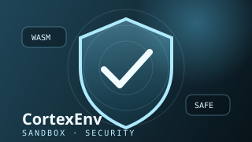
A secure execution sandbox and Rust workspace for AI-generated code featuring Wasmtime WASM isolation and resource limits.
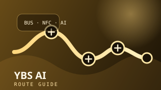
An intelligent bus route guide for Yangon with offline functionality, NFC card reading, BFS routing and Burmese voice alerts.
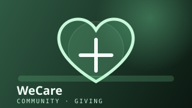
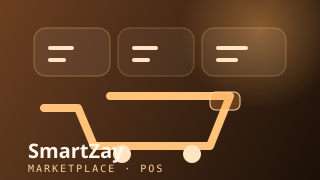
A SaaS e-commerce marketplace platform for sellers and buyers featuring custom product attributes, POS integration and P2P chat.
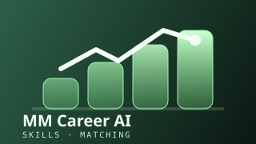
A career guidance platform for Myanmar professionals with skill assessment, job matching and learning roadmaps.
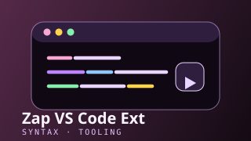
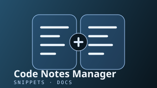
A developer-focused VS Code extension for organizing code snippets, learning notes and documentation.
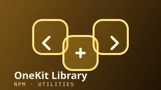
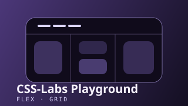
A live playground for learning Flexbox and Grid with preview, code generation and practical experiments.
A native Android VPN application focused on secure protocols, encryption and high-performance connectivity.
A gamified English learning app for young students with audio, animation and approachable lessons.
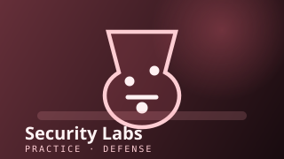
An interactive cybersecurity learning platform designed around practical labs and curated resources.
04 / What I do
I work across strategy, design and engineering to make digital work feel simple and human.
From a clear brief to a dependable, responsive product that is ready to ship.
Thoughtful interfaces and strong technical foundations across web, Flutter and native Android.
Useful AI features and workflows that solve a real problem instead of adding noise.
Practical guidance for people learning to build, debug and think like developers.
05 / Experience
Leading development projects and teaching full-stack web and mobile frameworks to students and junior developers.
Established an agricultural brand and managed the supply chain, label design, and distribution of agricultural nutrient and pest control products.
Sharing practical security knowledge and providing protection strategies for individuals and organizations.
Directing a software firm focused on custom enterprise solutions and SaaS architecture.
Building and delivering software products and client solutions since 2014, alongside teaching and mentoring.
06 / Technical Skills
Programming, systems, security, mobile and teaching — grouped by discipline so you can see what fits your project.
Languages and frameworks I build with daily.
Servers, cloud edge and the tools that ship code.
Defensive security, sandboxing and vulnerability research.
Native and cross-platform mobile with hardware integration.
Mentoring, curriculum design and technical publishing.
Agricultural branding, supply chain management and software architecture.
07 / Contact
Tell me what you’re building, what is stuck or what could be better. I’ll get back to you with a clear next step.
Say hello ↗